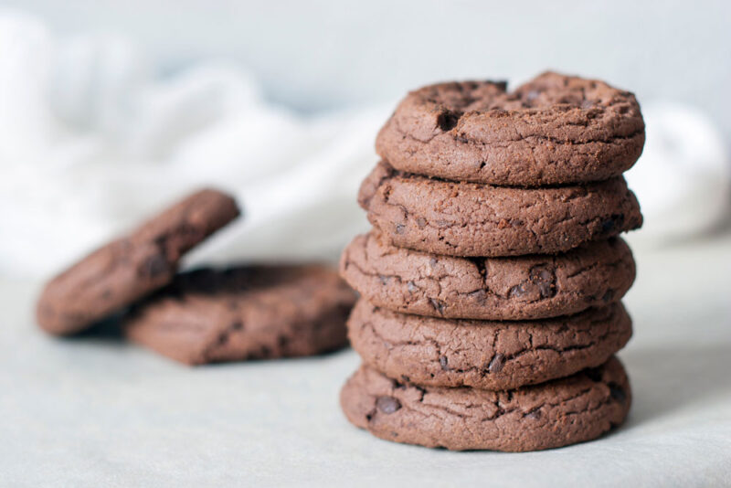

Galletas de Chocolate

Ingredientes
- 250 gr. de chocolate
- 50 gr. Manteca
- 100 gr. de Azúcar glass
- 2 huevos
- 200 gr. de harina de trigo
- 1 cc levadura en polvo
- 1 cda. de Vainilla
- Sal
Preparacion
- Fundir el chocolate a baño maría o en el microondas. Sumar la manteca junto a la vainilla y mezclar todo.
- Batir el azúcar y los huevos hasta duplicar el volumen. Por arriba agregar el chocolate derretido y mezclar nuevamente.
- Por último sumar la harina tamizada y la levadura con una pizca de sal. Mezclar lentamente hasta unir por completo.
- Refrigerar la masa por un rato hasta lograr una consistencia más dura.
- Con la masa fría formar las galletas, aplastarlas un poco y colocarlas en una placa de horno dejando una distancia prudente entre cada una.
- Precalentar el horno a 170 °C y hornear durante 10 min. Ir controlando el color y que no se quemen. Las galletas de chocolate deben quedar crocantes por fuera.
- Enfriarlas sobre una rejilla y servir.